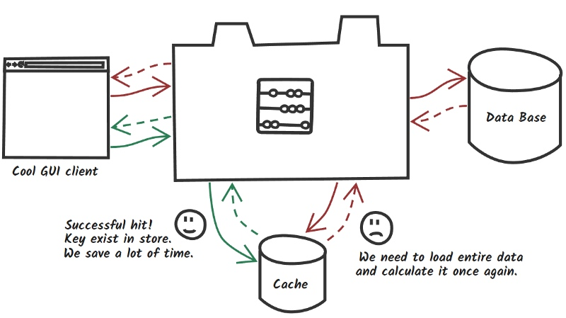
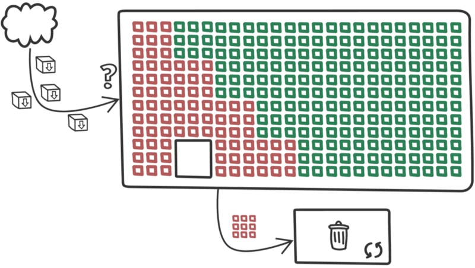

https://medium.com/@MatthewFTech/spring-boot-cache-with-redis-56026f7da83a
Each of us met the situation when application was working slowly. Even the best code will fall on knees at high load. Caching can be fast and relatively cheap way to increase performance and reduce response time.

In simple words caching is one of performance strategies when you must face with long running services. Invocation result can be placed inside fast
in-memory storage and used next time without expensive method execution. Following the green flow, you may notice if we found requested data in cache (called “cache hit”) we save time and resources. Red flow represents worst scenario (called “cache miss”) when cache doesn’t store expected data and you need to load and recalculate it from the beginning with an extra trip to cache which increases response time. So how it works underneath?

With big simplification when new data arrives, they are placed in the first empty bucket, but when cache is full, cleaning process is performed according to selected eviction algorithm. Some data are safe, they are used very often or meet other conditions for chosen algorithm. Rest of the data are candidates to remove. In ideal world cache will evict only old data until it found place for new ones. With Spring and Redis we will try to build simple app and consider how different factors can impact on our caching layer.
A Piece of Code
A little bit of background. Lets imagine that you work with social site where users are able to create own content, top most read posts are good candidates to find place in cache. Post structure will look more and less like code below, pretty simple but enough in this case.
public class Post implements Serializable {
private String id;
private String title;
private String description;
private String image;
private int shares;
private Author author;
//getters setters and constructors
}
https://gist.github.com/matthewfrank/2030aad230ca40d6c6a6e25e2d83ef7c#file-postchunk-java
Configuration and dependencies
Spring need spring-boot-started-data-redis as cache dependency.
Basic configuration can be set from properties level.
spring.cache.type=redis spring.redis.host=192.168.99.100 spring.redis.port=6379
Cache abstraction
Spring Framework provides an abstraction layer with set of annotations for caching support and can work together with various cache implementation like Redis, EhCache, Hazelcast, Infinispan and many more. Loose coupling is always very welcome :)
@Cacheable — Fulfill cache after method execution, next invocation with the same arguments will be omitted and result will be loaded from cache. Annotation provide useful feature called conditional caching. In some case no all data should be cached e.g. you want store in memory only most popular posts.
@Cacheable(value = "post-single", key = "#id", unless = "#result.shares < 500")
@GetMapping("/{id}")
public Post getPostByID(@PathVariable String id) throws PostNotFoundException {
log.info("get post with id {}", id);
return postService.getPostByID(id);
}
@Cacheable(value = "post-top")
@GetMapping("/top")
public List<Post> getTopPosts() {
return postService.getTopPosts();
}
@CachePut — Annotation allows to update entry in cache and support same options like Cacheable annotation. Code below updates post and return it for cache provider to change entry with new value.
@CachePut(value = "post-single", key = "#post.id")
@PutMapping("/update")
public Post updatePostByID(@RequestBody Post post) throws PostNotFoundException {
log.info("update post with id {}", post.getId());
postService.updatePost(post);
return post;
}
@CacheEvict — Remove entry from cache, can be both conditional and global to all entries in specific cache.
@CacheEvict(value = "post-single", key = "#id")
@DeleteMapping("/delete/{id}")
public void deletePostByID(@PathVariable String id) throws PostNotFoundException {
log.info("delete post with id {}", id);
postService.deletePost(id);
}
@CacheEvict(value = "post-top")
@GetMapping("/top/evict")
public void evictTopPosts() {
log.info("Evict post-top");
}
@EnableCaching — Annotation ensure that post processor will check all beans trying to find demarcated methods and will create proxy to intercept all invocations.
@Caching — Aggregate multiple annotations of the same type when e.g. you need to use different conditions and caches.
@CacheConfig — Class level annotation allows to specify global values for annotations like cache name or key generator.
Redis cache
Redis is popular open source in-memory data store used as a database, message broker and cache, for now only last use-case is important for us.
Download official Redis image from docker hub typing docker pull redis after this command new image should be present in your local repository (type docker images to check it). Of course it can installed on bare metal but for our case docker internal overhead is negligible. Standard Redis image will work well as storage but for cache we should consider few important things like maximum memory, eviction algorithms and durability.
Maximum memory — By default redis have no memory limits on 64-bit systems and 3 GB on 32-bit systems. Large memory can contain more data and increase hit ratio, one of the most important metrics but at a certain limit of memory the hit rate will be at the same level.
Eviction algorithms — When cache size reaches the memory limit, old data is removed to make place for new one. Access pattern is a keyword when you thinking about eviction policies, each strategy will be good for specific case:
- Last Recently Used (LRU) track when key was used last time. So probably it will be still used in future, but what if it was only ‘one shot’ before long idle time? Key will be stored to next eviction cycle.
- Least Frequently Used (LFU)[Available from Redis 4.0] will count how many times key was used. The most popular keys will survive eviction cycle. Problem appears when key was used very often some time ago. Another key starts to being requested but it still have smaller counter and will be candidate to eviction (Redis team solved problem with long lived keys by decreasing counter after some period of time).
Durability — For some reasons you may want to persist your cache. After startup, cache is initially empty, it will be useful to fulfill it with snapshot data in case of recovery after outage. Redis support three types of persistence:
- RDB point-in-time snapshots after specific interval of time or amount of writes. Rare snapshots should not harm performance but it will be a good task trying to find balance between snapshot interval and to avoid serving obsolete data after outage.
- AOF create persistence logs with every write operation. If you consider this level of durability, you should read about different fsync policies under
appendfsyncconfiguration parameter. - Both RDB and AOF.
Every additional fork or other operations like fsync() will consume power,
if warming-up is not important, disable all persistence options.
Redis configuration
All aspects mentioned before are configurable from redis.conf level. Its up to you how much memory you will allocate and what type of eviction algorithm you will choose. Eviction policy can be switched on the fly, but Redis will need some time to collect all keys metadata proper for chosen algorithm.
**#memory limit up to 128MB (up to you)** maxmemory 128mb **#remove the last recently used (LRU) keys first** maxmemory-policy allkeys-lru **#eviction precision (up to you)** `maxmemory-samples 10`
Metrics worth to track
Hit/miss ratio — Describes cache efficiency and give us relevant information about rightness of our approach. Low hit ratio is a signal to reflect on nature of stored data. It’s easy to fall into the trap of premature optimization at the early stages of project when you can only guess relying on experience what data should be cached.
**λ:** redis-cli info stats **... keyspace_hits:142 #Successful lookups keyspace_misses:26 #Failed lookups ...**
Redis delivers information about amount of lookups, ratio can be calculated using below formula.
**hit_ratio ** =(keyspace_hits)/(keyspace_hits + keyspace_misses) **miss_ratio =** (keyspace_misses)/(keyspace_hits + keyspace_misses)
Latency — Maximum delay between request and respond. First place where we can find if something bad happen with your cache. Many factors can impact on latency like VM overhead, slow commands or I/O operations.
**λ:** redis-cli --latency -h 127.0.0.1 -p 6379 min: 0, max: 16, avg: 0.15 (324531 samples)...
Fragmentation Ratio — Redis will always use more memory than you declared in maxmemory for himself and e.g. to keeps keys metadata but high ratio can be first signal of memory fragmentation.
- ratio <1.0 —Memory allocator need more than you can give him. Old data will be swapped to disk what occurs resources consumption and increase latency. (In case of cache usage, swapping should be disabled)
- ratio > ~1.5 — Operation system slice memory segment into pieces, Redis use more physical memory than he requested for.
**λ:** redis-cli info memory **...** used_memory_human:41.22M **...** used_memory_rss_human:50.01M ... **mem_fragmentation_ratio:1.21 #used_memory_rss/used_memory ...**
Evicted keys — When cache size exceeds maxmemory limit Redis removes data using chosen eviction policy. Constantly fast growing value can be signal of insufficient cache size.
**λ:** redis-cli info stats **... evicted_keys:14 #14 keys removed since operation time ...**
Run and Test
Docker knowledge will be advantage. In short words, commands below will download redis image and run container with custom configuration. Container will run as daemon, last two command runs bash and redis-cli.
**λ:** docker pull redis **λ:** docker run -p 6379:6379 -d --name redis-cache \-v /usr/configs:/usr/redis_config \redis redis-server /usr/redis_config/redis.conf **λ:** docker exec -it redis-cache /bin/bash **λ:** redis-cli
Example application is available on GitHub here.
**λ:** for /l %N in (1 1 5) do
\curl -o /dev/null -s -w "%{time_total}\n"
\localhost:8080/post/IDX001
...
**1.012 #cache miss**
0.009 **#cache hit**
0.009 **#cache hit**
0.011 **#cache hit**
0.010 **#cache hit**
It’s good time to check what is exactly stored by Redis. For more human readable key name, please check other RedisSerializer.java implementations.
**λ:** redis-cli keys * **#Or more efficient scan 0 instead of** **keys *** 1) "post-single:\xac\xed\x00\x05t\x00\x06IDX001"
Application work like we expected, after first invocation cache is fulfilled for given key, next request use cached data.
Traps
Stale data. High dynamic data become outdated very quickly. Without update or expiration mechanism cache will serve obsolete content.
Large memory is not always equal bigger hit ratio. When you reach specific amount of memory, hit ratio will not increase. In this place many things will depend on eviction policies and nature of data.
Premature optimization. Let test your services without cache, may be your fears will proved groundless, “Premature optimization is the root of all evil”.
Hiding bad performance. Cache is not always an answer for slow services, try to optimize them before, because when you put them after cache layer, you will hide possible architectural mistakes.
Don’t share your redis cache. Redis works on single thread. Other teams may use your store for other extensive purposes. Every data bumps, heavy commands (KEYS, SORT etc.) may block your cache and increase execution time. In case of performance problems, check SLOWLOG command.
Config param [maxmemory]. If you consider run your cache with snapshot persistence you should use less than half of available memory as maxmemory to avoid memory errors.
Monitoring. You should monitor your cache, from time to time INFO will not generate performance issues but MONITOR can reduce the throughput dramatically.
Repository
matthewfrank/spring-boot-redis-cache
Contribute to spring-boot-redis-cache development by creating an account on GitHub.github.com